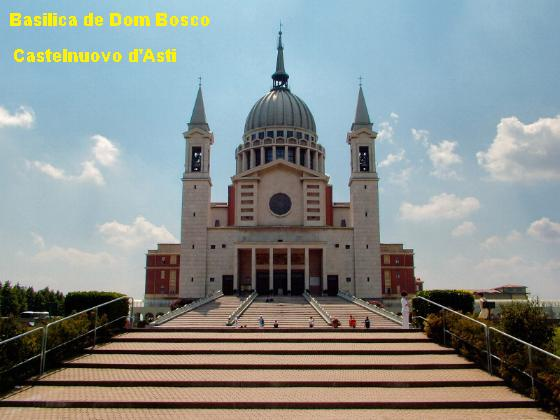
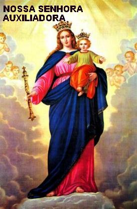
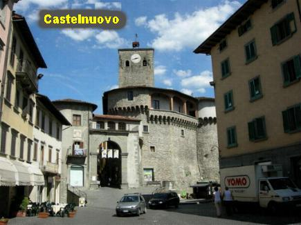
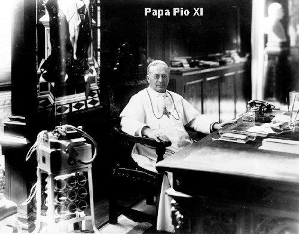
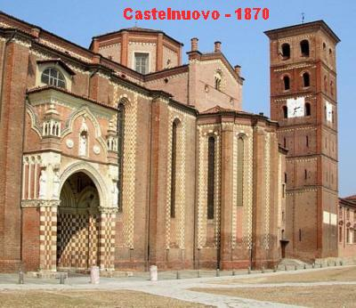
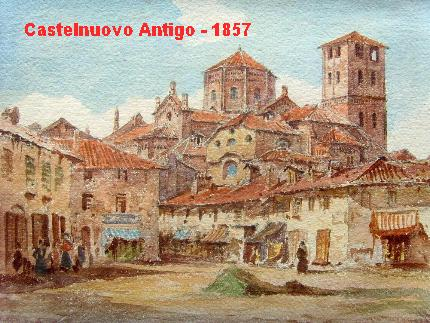
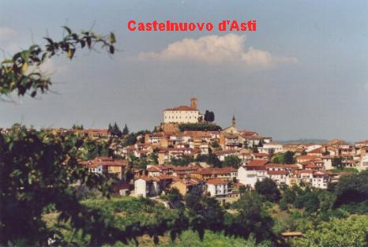
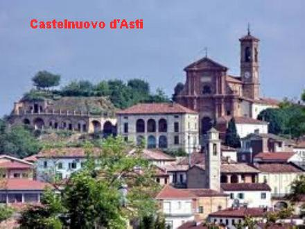
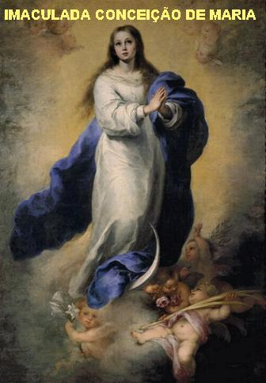

FOTOGRAFIAS









CONVITE
Visite o PORTAL DO APOSTOLADO num dos endereços abaixo, e tenha a oportunidade de conhecer os nossos Sites, todos eles construídos bem fundamentados na Sagrada Escritura, nas Tradições Cristãs, nas Manifestações Sobrenaturais e na Vida e Obra dos Santos, com o objetivo de informar somente a verdade.
http://www.apostoladosagradoscoracoes.com.br/
http://www.angelfire.com/sc3/ministro/index.html
http://apostled.tripod.com/index.html
http://jusan.tripod.com/index.html
"ALGUNS SITES"
NOSSA SENHORA DE NAJU - Manifestações sobrenaturais impressionantes, ilustradas com dezenas de fotografias; as lágrimas de sangue da MÃE DE DEUS; a Comunhão Eucarística na boca da Vidente se transforma em Carne e Sangue do SENHOR JESUS; os estigmas da Paixão de JESUS aparecem nas mãos e pés de Júlia; e muitos outros acontecimentos que testemunham o empenho do CRIADOR em provar a Verdade Cristã.
http://apostoladosagradoscoracoes.angelfire.com/index3.html
NOSSA SENHORA DA CONCEIÇÃO APARECIDA - A História mais autêntica do encontro da imagem milagrosa por pescadores; os benefícios e graças provenientes da intercessão maternal junto a DEUS; coroada Rainha e Padroeira do Brasil; construção da Basílica, Santuário Nacional; e muitas informações importantes, para aqueles que desejam conhecer e usufruir a grandeza da manifestação Divina, neste recanto brasileiro.
http://apostoladosagradoscoracoes.angelfire.com/index2.html
O MISTÉRIO DE DEUS - Uma Home Page dedicada a DEUS PAI CRIADOR, a fim de que ELE seja mais conhecido e possa ser mais amado, honrado e louvado pelos seus filhos; os Mistérios Divinos: Criação, Pecado Original, Redenção e Salvação da Humanidade; Mistério da Graça; Mistério da Santíssima Trindade.
http://www.angelfire.com/mn/apostled/index5.html
http://apostoladosagradoscoracoes.angelfire.com/index5.html
VAMOS REZAR" - Estimula a Oração, o aperfeiçoamento das virtudes e as qualidades pessoais, a conversão do coração e a necessidade de ser feita a Vontade do CRIADOR.
http://www.angelfire.com/nv/sacred/index4.html
http://apostoladosagradoscoracoes.angelfire.com/index4.html
A VIDA DE NOSSA SENHORA - Infância e Juventude; Noivado com José; Anunciação do Anjo; Dúvida de José; Casamento de Maria; Nascimento de JESUS; Os Três Reis Magos; Fuga para o Egito; Lar de Nazaré; Assunção aos Céus.
http://apostoladosagradoscoracoes.angelfire.com/index12.html
"E-MAIL"
Para comunicar-se conosco, clicar na figura abaixo:

"FIRMAS DE BUSCA"